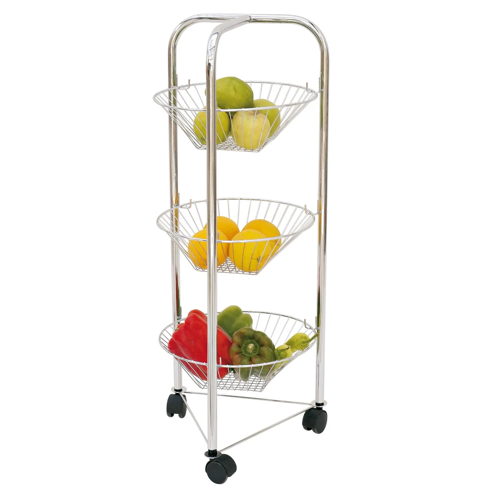
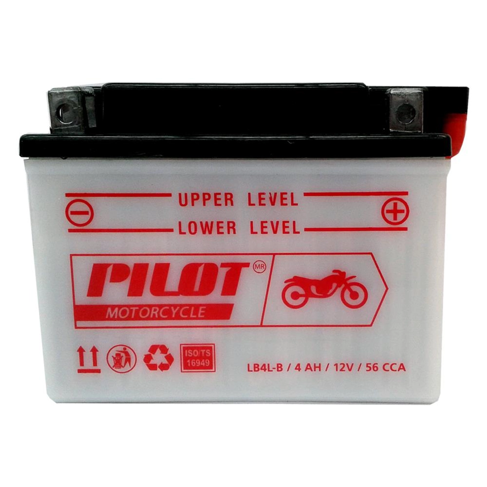

ESP32
ESP32 es un único chip combinado de Wi-Fi y Bluetooth de 2.4 GHz, diseñado con la tecnología de bajo consumo de 40 nm de TSMC. Está diseñado para lograr el mejor rendimiento en cuanto a consumo de energía y radiofrecuencia (RF), mostrando solidez, versatilidad y fiabilidad en una amplia variedad de aplicaciones y escenarios de consumo energético.

Con su bajo consumo de energía, el ESP32 es una opción ideal para dispositivos IoT en las siguientes áreas:
-
Hogar inteligente
-
Automatización industrial
-
Cuidado de la salud
-
Electrónica de consumo
-
Agricultura inteligente
-
Máquinas POS
-
Robots de servicio
-
Dispositivos de audio
-
Concentradores de sensores IoT de bajo consumo genéricos
-
Registradores de datos IoT de bajo consumo genéricos
-
Cámaras para transmisión de video
-
Reconocimiento de voz
-
Reconocimiento de imágenes
-
Tarjeta de red SDIO Wi-Fi + Bluetooth
Si has trabajado con Arduino y con las placas basadas en ESP8266, la ESP32 es muy similar. Es una placa con microcontrolador muchísimo más poderosa que Arduino y se puede programar con el mismo IDE de Arduino.

Características Principales
-
Microcontrolador Tensilica LX6 de doble núcleo a 240 MHz con 600 DMIPS
-
SRAM integrada de 520 KB
-
Transceptor Wi-Fi 802.11 b/g/n HT40 integrado, con banda base, pila y LwIP
-
Bluetooth de modo dual integrado (clásico y BLE)
-
Memoria flash de 4 MB, mapeada a la memoria de código de la CPU
-
Voltaje de operación de 2.3V a 3.6V
-
Temperatura de operación de -40°C a +125°C
ESP32-DevKit
La placa de desarrollo ESP32-C6-DevKit Dual Tipo C es una solución avanzada y versátil para el desarrollo de aplicaciones IoT y dispositivos conectados. Basada en el microcontrolador ESP32-C6 de Espressif Systems, esta placa ofrece una serie de mejoras en conectividad y rendimiento, haciéndola ideal para una amplia gama de aplicaciones desde sistemas de monitoreo remoto hasta soluciones industriales y de hogar inteligente.

Características Destacadas
-
Microcontrolador Avanzado: Equipado con el ESP32-C6, esta placa proporciona un rendimiento mejorado y capacidades ampliadas en comparación con las versiones anteriores de la serie ESP32.
-
Conectividad Superior: Ofrece conectividad mejorada con Bluetooth Low Energy (BLE) 5.0 y soporte para el protocolo IEEE 802.11ax, lo que asegura una comunicación eficiente y de alta velocidad. También es compatible con los protocolos IEEE 802.11b/g/n en anchos de banda de 20 MHz y 40 MHz, alcanzando velocidades de datos de hasta 150 Mbps.
-
Memoria y Almacenamiento: Con 4 MB de memoria FLASH, 320 KB de ROM, 512 KB de HP SRAM, y 16 KB de LP SRAM, la placa proporciona suficiente capacidad para ejecutar aplicaciones complejas y almacenar datos de manera eficiente.
-
Versatilidad en Puertos: Dispone de 32 GPIO, 3 SPI, 2 UART, 1 I2C, y 1 ADC, ofreciendo una amplia gama de opciones para conectar y controlar periféricos y sensores.
-
Diseño Robusto: Con una temperatura de funcionamiento de -40 ℃ a 85 ℃, la placa está diseñada para operar en condiciones ambientales extremas, asegurando fiabilidad en entornos industriales y exteriores.
-
Antena Integrada: Incluye una antena PCB integrada, que optimiza la conectividad sin necesidad de componentes externos adicionales.
-
Conectividad Tipo C: La placa está equipada con un puerto USB Tipo C, facilitando la conexión y la programación, y proporcionando una interfaz moderna y eficiente.
Disponibilidad en: https://www.mechatronicstore.cl/esp32-c6-devkit-pro-tipo-c/
Tipos de ESP32
-
ESP32-DevKitC (varios módulos: WROOM, WROVER con PSRAM). Uno de los más económicos y fáciles de adquirir en el mercado.
-
ESP32-C3-DevKitC / DevKitM (chip RISC-V)
-
ESP32-S2-DevKitC (USB nativo + Wi-Fi)
-
ESP32-S3-DevKitC (USB + PSRAM + AI)
-
ESP32-C6-DevKitC (Wi-Fi 6 + BLE + Thread/Zigbee)
-
ESP32-H2-DevKitM (802.15.4 + BLE para Zigbee/Thread)
-
ESP32-CAM – integración de cámara y microSD (muy usada en visión IoT).
-
Boards con pantalla (TTGO T-Display) – con LCD para proyectos con interfaz visual.
-
Boards con LoRa (TTGO T-Beam, Heltec) – combinan ESP32 con transceptores LoRa para comunicaciones de largo alcance
-
ESP32-P4: No es una placa típica con Wi-Fi/Bluetooth, sino un SoC (chip). Está más orientada a tareas de procesamiento y conectividad por cable/periféricos.
Proyecto Gladiadores Robots
El objetivo es crear un "Gladiador Robot" controlado por un smartphone via Wifi, este debe ser capaz de reventar un globo. El ganador es quien reviente el globo del oponente.

Materiales
| Ítem | Descripción | ¿Donde adquirir? |
|---|---|---|
ESP32 (Wifi) + Smartphone |
Principal componente. Se programará para enviar señales a los servomotores y crear un servidor web para ser controlado via Smartphone. |
|
Placa de desarrollo ESP32 |
Extensión del ESP32 que incluye regulador de voltaje para resistir hasta 16V de entrada (DC) y contiene hileras con voltaje, tierra y señal de forma más comoda. |
|
2 motores DC 3 a 12V |
Principal fuente de movimiento del gladiador. La elección del motor y su necesidad de voltaje es a criterio del equipo (mayor velocidad = mayor voltaje). |
https://articulo.mercadolibre.cl/MLC-923623185-motor-dc-coche-gear-amarillo-3v-12v-_JM |
L298N |
Permite controlar dos motores de corriente continua o un motor paso a paso bipolar de hasta 2 amperes. |
|
Chasis + Ruedas de Goma + Porta Pilas |
Principal fuente de poder y marco para armar. Alimentación entre 6v a 12v. 9v recomendado. |
|
Gladiador de Lego (A elección). |
Mini figura de lego versión dungeons and dragons o similar. |
https://www.tiendalego.cl/products/dungeons-dragons-71047?variant=41690791805046 |
Protoboard |
Marco para conexión de componentes. Recomendado 400 puntos. |
|
Cables Jumper |
Macho - Hembra, Macho - Macho. Permite conectar los componentes. |
|
Globos largos (Colores diferentes para cada gladiador). |
Globos inflables + bombin. |
https://belina.cl/globos-largos-20cm-bombin-colores-surtidos-20-pcs |
Armas para reventar el Globo (A elección) |
Clavos, alfileres o materiales corto punzantes varios. |

ESP32 MONTADO EN PLACA |
MOTOR AC1 |
MOTOR AC2 |
L298N |
Batería |
Pin 16 |
IN1 |
|||
Pin 17 |
IN2 |
|||
Pin 18 |
IN3 |
|||
Pin 19 |
IN4 |
|||
(+) |
OUT1 |
|||
(-) |
OUT2 |
|||
(+) |
OUT3 |
|||
(-) |
OUT4 |
|||
IN12V |
(+) |
|||
GND |
(-) |
|||
Jack de carga |
(+)(-) |
|
La posición del globo depende de cada gladiador. Pero almenos debe tener dos puntos de anclaje inferior. |
|
Las pilas son conectadas a los motores y al ESP32 de forma separada, gracias a la placa de expansión se conecta al Jack de carga directamente a las pilas ya que este aguanta hasta 16v sin problemas. |
Código fuente
#include <WiFi.h>
#include <WebServer.h>
// Nombre de la red WiFi creada por el ESP32
const char* ssid = "RobotESP32";
const char* password = "12345678";
// Pines del L298N
const int IN1 = 16;
const int IN2 = 17;
const int IN3 = 18;
const int IN4 = 19;
WebServer server(80);
// Funciones de movimiento
void parar() {
digitalWrite(IN1, LOW);
digitalWrite(IN2, LOW);
digitalWrite(IN3, LOW);
digitalWrite(IN4, LOW);
}
void adelante() {
digitalWrite(IN1, HIGH);
digitalWrite(IN2, LOW);
digitalWrite(IN3, HIGH);
digitalWrite(IN4, LOW);
}
void atras() {
digitalWrite(IN1, LOW);
digitalWrite(IN2, HIGH);
digitalWrite(IN3, LOW);
digitalWrite(IN4, HIGH);
}
void izquierda() {
digitalWrite(IN1, LOW);
digitalWrite(IN2, HIGH);
digitalWrite(IN3, HIGH);
digitalWrite(IN4, LOW);
}
void derecha() {
digitalWrite(IN1, HIGH);
digitalWrite(IN2, LOW);
digitalWrite(IN3, LOW);
digitalWrite(IN4, HIGH);
}
// Página web con botones
String paginaHTML() {
return R"rawliteral(
<!DOCTYPE html>
<html>
<head>
<title>Control del Robot</title>
<style>
body { text-align: center; font-family: Arial; }
button {
width: 100px; height: 50px;
font-size: 18px; margin: 5px;
}
</style>
</head>
<body>
<h1>Control del Robot</h1>
<button onclick="location.href='/adelante'">Adelante</button><br>
<button onclick="location.href='/izquierda'">Izquierda</button>
<button onclick="location.href='/parar'">Parar</button>
<button onclick="location.href='/derecha'">Derecha</button><br>
<button onclick="location.href='/atras'">Atrás</button>
</body>
</html>
)rawliteral";
}
void setup() {
Serial.begin(115200);
// Configurar pines como salida
pinMode(IN1, OUTPUT);
pinMode(IN2, OUTPUT);
pinMode(IN3, OUTPUT);
pinMode(IN4, OUTPUT);
parar();
// Iniciar el ESP32 como Access Point
WiFi.softAP(ssid, password);
Serial.println("Red WiFi creada");
Serial.print("IP del robot: ");
Serial.println(WiFi.softAPIP());
// Rutas del servidor
server.on("/", []() {
server.send(200, "text/html", paginaHTML());
});
server.on("/adelante", []() {
adelante();
server.send(200, "text/html", paginaHTML());
});
server.on("/atras", []() {
atras();
server.send(200, "text/html", paginaHTML());
});
server.on("/izquierda", []() {
izquierda();
server.send(200, "text/html", paginaHTML());
});
server.on("/derecha", []() {
derecha();
server.send(200, "text/html", paginaHTML());
});
server.on("/parar", []() {
parar();
server.send(200, "text/html", paginaHTML());
});
server.begin();
}
void loop() {
server.handleClient();
}Al construir el gladiador se tendrá acceso a una red Wifi llamada "RobotESP32" (cambiar el nombre para cada gladiador). La cual puede ser accedida desde cualquier smartphone o computador.
const char* ssid = "RobotESP32";
const char* password = "12345678";Esta red permite enviar comandos de dirección al hacer click en los enlaces. Se deja como ejercicio adicional la creación de una interfaz más adecuada para el control del robot, como un joystick virtual o físico.
Proyecto Robot Animatrónico
Hoy en día existen diversos robots para cumplir tareas específicas. En el área de restaurantes existen los robots meseros autónomos. Éstos robots permiten servir mesas y encontrar su camino por el restaurant.
Entre los ejemplos disponibles esta el Segway ServeBot S1(“Restaurant Service Robot - Segway Robotics,” 2024) y el Bellabot (“Smart Delivery Robot-Pudu Robotics,” n.d.).

Estos robots son de alta tecnología y cuentan con sensores e inteligencia artificial muy sofisticada. Lo que los hace tener un precio prohibitivo para la mayoría de los restaurantes.
Pilotos OriHime
En Japón existe el concepto de "Avatar Robot Café". Donde un restaurant/café es atentido por avatares robots. Es decir, robots controlados por humanos remotamente. Estos robots no cuentan con IA debido a que se busca integrar a personas con dificultades motoras u otros problemas que les impide integrarse a la sociedad en trabajos tradicionales.
Entre los avatares robots se puede encontrar meseros y baristas.
Son controlados remotamente con una aplicación de tablet smartphone.

Estos robots están ubicados en el Dawn Cafe
El “Avatar Robot Café DAWN ver.β” es un café experimental permanente operado por OryLab Inc., donde personas que tienen dificultades para salir de casa por diversas razones operan de forma remota nuestros robots avatar OriHime y OriHime-D desde sus hogares y hospitales para brindar servicios. ("Avatar Robot Café" n.d.)
Restaurantes y Robots en Chile
En Chile se han utilizado robots animatrónicos como el conocido restaurante "África" de Viña del Mar (SoyChile, 2019).

Jorge Fernández, gerente de El Japonés de Viña del Mar, calcula que desde que tienen al “Michi-robot” haciendo las veces de mesero la afluencia del público al local ha aumentado en un 20 por ciento. ¿La razón? La curiosidad de ver en acción al Bella-bot -o “Michi”, como le llaman en el restaurante-, que lleva pedidos a la mesa como un garzón más. (Transformadores, 2023).
Descripción del Proyecto
Como se puede apreciar, Chile está preparado para adoptar la inclusión de robots en el área de servicios, especialmente en robots meseros. Sin embargo los altos precios de adquisición impiden que más restaurantes adopten estas tecnologías.
Para lograr disminuir la brecha tecnológica y aumentar la inclusión de personas con dificultades de trabajar presencialmente, se debe crear una alternativa de bajo costo e identidad local.
Para esto se creará un "Avatar Robot" controlado remotamente via internet que pueda ser usado para atender comandas y servir como garzón en restaurantes.
Materiales
Este robot utilizará materiales reciclados o fáciles de adquirir a un costo moderado.
Marco
Para el marco principal se debe considerar una estructura liviana que permita un movimiento para todas las direcciones, cuente con un lugar para dejar los platos y sea higiénica y estéticamente apropiado.
Queda a discreción la selección del marco inicial. Acá se presentará unas opciones posibles.
| Nombre | Fotografía | Descripción |
|---|---|---|
Estante de Almacenamiento con Ruedas Giratorias y Cestas Metalicas |

|
Carrito Organizador Con Cesta Metal y Ruedas Bloqueables 3 Niveles
|
Organizador de frutas metal 3 canastos Cromado |

|
La Frutera con 3 canastos y 3 ruedas en la parte inferior.
|
Carro de compras colores 32 L |

|
Carro de compras colores 32 L
|
La recomendación es que permita al menos 3 niveles. Ya que se necesita espacio para:
-
La batería y circuitería. Ubicados en el nivel inferior.
-
La bandeja principal para almacenar los platos a servir.
-
Una bandeja superior para almacenar la cámara y un robot o pantalla opcional para expresar emociones por parte del piloto operador.
El carro será controlado por una ESP32 que recibirá comandos por USB desde la Raspberry PI.
Batería
La batería puede ser un PowerBank o una batería de motocicleta con un adaptador para USB. Es importante recalcar que el amperaje mínimo necesario es 3 amperes. Menor a ese amperaje servirá para cargar un smartphone, más no para alimentar una Raspberry PI.
| Opción | Imagen | Descripción |
|---|---|---|
PowerBank de 30K mAh |

|
Batería portátil USB capacidad de 30000 mAh. Tres puertos USB con USB-A y USB-C. Carga rápida del dispositivo con puerto USB-C PD 3.0 de máximo 20 W o USB-A con salida QC3/0 de máximo 18 W.
|
Batería 12v + Adaptador USB |

|
Batería de motocicleta combinada con un adaptador USB de alta potencia (QC3.0). Es una opción válida para alimentar el robot. Ventajas:
Desventaja:
Disponible en: |
Smartphone
El Smartphone es necesario para proveer internet a la Raspberry PI y también actuar como cámara principal para la comunicación remota (utilizando una video llamada).
Se recomienda un smartphone Android. Cualquiera que pueda hacer uso de redes 3G y sea relativamente moderno (entre 5 a 10 años de antigüedad) servirá como principal puente de comunicación.
Se podría omitir este elemento si el restaurante cuenta con Wifi y añadir una cámara web a la Raspberry PI, pero requeriría de mayores configuraciones en el router del local y asegurar estabilidad de señal.
Para la elaboración de la comunicación via video se utilizará los servicios de Jitsi Meet. El cual proporciona una solución de bajo costo y de código libre para ser utilizada.
Raspberry PI 3
Raspberry PI 3 cuenta con un procesador Broadcom Quad-Core ARM Cortex-A53 a 1.2GHz combinados con 1GB de RAM LPDDR2.
Será el computador principal conectado con Nerves, lo que permitirá enviar señales tanto al Emote Robot como al Carro utilizando USB, además de proporcionar un servidor web accesible mediante internet conectándose al Smartphone.
-
Sistema Nerves: https://github.com/nerves-project/nerves_system_rpi3
-
Disponible en: https://altronics.cl/raspberry-pi-3-modelb-old?search=raspberry&page=4
El modelo de Raspberry Pi es a elección, simplemente debe ser compatible con Nerves (https://hexdocs.pm/nerves/supported-targets.html) Un modelo alternativo compatible es el Raspberry Pi Zero 2W.

-
Disponible en: https://mcielectronics.cl/shop/product/33107/
Emote Robot
Para proporcionar una forma de mostrar emociones remotamente se puede utilizar un personaje de lego animatrónico. Esto es totalmente opcional, pero agrega personalidad y empatía al robot. También puede ser utilizada una smart tablet con un personaje animado y controlado remotamente.
Puede ser adquirido en https://www.tiendalego.cl/collections/creator-3in1/products/dragon-rojo-31145

El robot será controlado por una ESP32 que recibirá comandos por USB desde la Raspberry PI.
Componente |
Descripción |
1 Raspberry PI |
Una versión compatible con Nerves y que permita conexión USB (UART) a la ESP32 |
2 ESP32 Devkit |
Un ESP32 para controlar el carro y un ESP32 para controlar el robot |
4 Motor DC |
Cuatro motores DC de alto torque para movilidad del carro hasta 25 Kg. |
L298N |
Permite controlar al los motores DC. |
Android Smartphone |
Un Smartphone que actue como Hotspot y permita usar Jitsi Meet |
Baterías |
La batería necesaria para alimentar tanto a la Raspberry, ESP32 y Smartphone |
Servicio de DNS dinámico para acceder al servidor de la Raspberry PI |
Búho Animatrónico
Este proyecto grupal tiene como propósito la programación de una figura animatrónica con actuadores (servos), que es controlada a través de un microcontrolador ESP32 y un programa en C++. La figura elegida fue un búho, cuyas alas, cabeza y patas tienen movimiento mediante servomotores.
| Componente | Cantidad | Descripción |
|---|---|---|
ESP32-WROOM |
1 |
Microcontrolador principal |
Servomotor SG90 |
4 |
Uno por ala, uno en la cabeza, uno en las patas |
Fuente de alimentación |
1 |
USB 5V (desde computadora o batería externa) |
Cables Dupont |
Varios |
Para Conexiones |
Bloques tipo LEGO |
Varios |
Para ensamblar la estructura del búho |
Protoboard / PCB |
1 |
Para conexiones eléctricas (opcional) |
Acotaciones
-
Se recomienda usar piezas tipo LEGO para facilitar el ajuste de los servos y permitir cambios de diseño de manera sencilla.
-
Se cuidó el peso en el diseño para no sobrecargar los servos, especialmente en las alas.
-
La alimentación por USB 5V es suficiente para los servos, pero se debe evitar hacer movimientos simultáneos prolongados para no sobrecargar la corriente disponible.
-
La estructura fue validada para estabilidad durante los movimientos.
-
El código debe incorporar retardos adecuados y límites de movimiento para evitar daños mecánicos.
#include <ESP32Servo.h>
int pos = 0;
Servo izquierdo;
Servo derecho;
Servo cabeza;
Servo poto;
int led = 16;
bool inicializar = true;
void setup() {
Serial.begin(115200);
// Pines válidos para ESP32, cambia si usas otros
izquierdo.attach(13, 500, 2500);
derecho.attach(14, 500, 2500);
cabeza.attach(15, 500, 2500);
poto.attach(18, 500, 2500);
pinMode(led, OUTPUT);
}
void startPosition() {
digitalWrite(led, HIGH);
derecho.write(180);
izquierdo.write(0);
cabeza.write(180);
poto.write(0);
delay(500);
digitalWrite(led, LOW);
}
void saludar(int velocidad) {
digitalWrite(led, HIGH);
for (pos = 90; pos <= 180; pos += 1) {
izquierdo.write(pos);
derecho.write(180 - pos);
poto.write(90-pos);
delay(velocidad);
}
for (pos = 180; pos >= 90; pos -= 1) {
izquierdo.write(pos);
derecho.write(180 - pos);
poto.write(pos-40);
delay(velocidad);
}
digitalWrite(led, LOW);
}
void feliz(int velocidad) {
digitalWrite(led, HIGH);
for (pos = 90; pos <= 180; pos += 1) {
izquierdo.write(pos);
derecho.write(180 - pos);
cabeza.write(pos);
delay(velocidad);
}
for (pos = 180; pos >= 90; pos -= 1) {
izquierdo.write(pos);
derecho.write(180 - pos);
delay(velocidad);
}
digitalWrite(led, LOW);
}
void enojar(int velocidad) {
digitalWrite(led, HIGH);
for (pos =120; pos <= 180; pos += 1) {
cabeza.write(pos);
delay(velocidad);
}
digitalWrite(led, LOW);
}
// Lectura de los comandos por serial USB
void leerComandoSerial() {
if (Serial.available() <= 0) {
return;
}
String comando = Serial.readStringUntil('\n');
// Elimina espacios y saltos de línea
comando.trim();
if (comando == "saludar") {
cabeza.write(160);
delay(15);
saludar(10);
saludar(10);
saludar(10);
startPosition();
} else if (comando == "enojar") {
startPosition();
enojar(10);
enojar(10);
enojar(10);
startPosition();
} else if (comando == "resetear") {
startPosition();
} else if (comando == "feliz") {
feliz(5);
feliz(5);
feliz(5);
startPosition();
} else {
Serial.println("Comando no reconocido.");
}
}
void loop() {
leerComandoSerial();
}

Referencias
-
Universidad EIA -canal institucional-. (2023, September 27). Master Class "ESP32 en la Nube: Conectando microcontroladores a Amazon Web Service [Video]. YouTube. https://www.youtube.com/watch?v=YLP02lzla5U
-
Restaurant Service Robot - Segway Robotics. (2024, June 12). Retrieved from https://robotics.segway.com/baobao/
-
Smart Delivery Robot-Pudu Robotics. (n.d.). Retrieved from https://www.pudurobotics.com/product/detail/bellabot
-
Avatar Robot Café. (n.d.). Retrieved from https://dawn2021.orylab.com/en/
-
SoyChile. (2019, July 18). Viaje en el tiempo: “África” de Viña del Mar vuelve a rugir con los animatronics. Retrieved from https://www.soychile.cl/Valparaiso/Sociedad/2019/07/18/606350/Viaje-en-el-tiempo-Africa-de-Vina-del-Mar-vuelve-a-rugir-con-los-animatronics.aspx
-
Transformadores. (2023, February 7). El “Michi-robot” que revoluciona a un restaurante de Viña del Mar. La Tercera. Retrieved from https://www.latercera.com